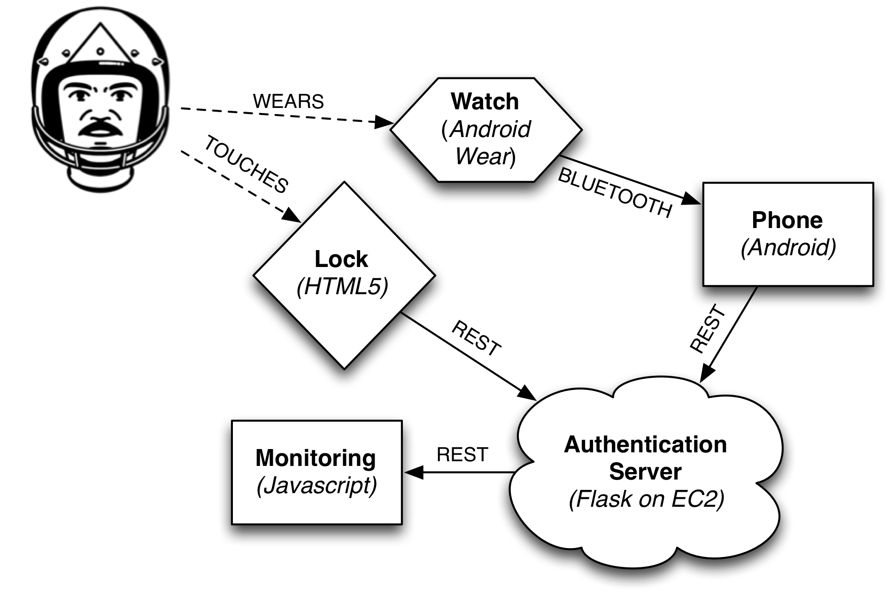

# Smart Locks: Rebooted
#### Grant Ho, Linda Lee, Peter Bailis
#### INFO 290: Sensors, Humans, Data, Apps
----
<!--- http://daringfireball.net/projects/markdown/syntax -->
## Introduction
Short, improved over [this](http://www.bailis.org/private/info290/p1/report.html).
## Problem Statement
Integrate wearables with existing locks
## System Architecture and Algorithm
What did we build? How did we detect.

## User Interface
<img src="denied.png" width=200 />
## Threat Mitigation
What did we find out?
## Remaining Threats
What didn't we solve?
## Future Work
Better gesture recognition, etc. goes here.
## Conclusions
You know the drill
## Acknowledgements
The authors would like to thank John Chuang, the students enrolled in
the Fall 2014 offering of INFO 290, Dawn Song, and David Wagner for
their feedback and assistance on this work. This project is supported
in part by the Intel Science and Technology Center for Secure
Computing ([SCRUB](http://scrub.cs.berkeley.edu/)). Moonpie graphic by
Simon Child licensed as Creative Commons -- Attribution (CC BY 3.0).